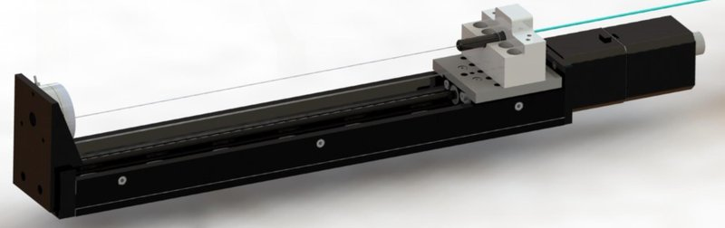

Academic bedside robots · cstar_ablation_khoshnam2014
CSTAR ablation robot
CSTAR robotics-assisted ablation-catheter manipulation system (pull-wire drive with tension sensing and model-based contact-force estimation)

1 / 4


- Family
- Academic bedside robots (academic)
- Devices
- one 7 Fr unidirectional steerable ablation catheter (Biosense Webster); handle cover removed, prismatic knob fixed to the stage slider (IROS 2015 Sec. II)
- Degrees of freedom
- 1 actuated (pull-wire flexion); catheter body free in the sheath
- Push
- Other drives
- Twist
- None
- Tested up to
- Bench
- Sim-to-real
- None found — No simulation-trained controller found for this robot.
Testing
- Highest level
- Bench
- What was tested
- artificial tissue on a Nano17 sensor moved by a Zaber T-LSM050A stage, including 8.5 mm sinusoidal wall motion; three cases in Table II (IROS 2015 Sec. IV)
- Key numbers
- tip placed within +-1 mm of target; contact-force estimation error below 3 gf, maximum 2.64 gf (IROS 2015 abstract, Sec. V)
Mechanism
- Push (translation)
- other: body insertion not actuated; pull-wire driven by a Zaber T-LSR300B motorised linear stage
- Twist (rotation)
- none (not actuated)
- Device range
- one catheter model
- Target anatomy
- cardiac ablation (atria)
Sensing and interface
- Force sensing
- ATI Nano43 measures pull-wire tension; tip-tissue force estimated from tension plus tip pose (no tip sensor); ATI Nano17 under the tissue as ground truth (IROS 2015 Sec. II)
- Leader and haptics
- none; GUI displays real-time contact-force estimate
- Imaging
- camera tracking of tip markers (640 x 480 px, 30 fps) as fluoroscopy stand-in
- Sterility
- N.R.
Size
- Footprint (mm)
- N.R.
- Mass (kg)
- N.R.
Simulation
- Simulation model
- none found
- Sim-trained controller
- none found
Versions
- Lineage
- 2014 BioRob robotics-assisted catheter manipulation for ablation efficiency (title); 2015 IROS system with real-time force estimation (full); 3-DOF manipulator named as ongoing work (IROS 2015 Sec. V)
Sources
- A robotics-assisted catheter manipulation system for cardiac ablation with real-time force estimation · 2015 IEEE/RSJ International Conference on Intelligent Robots and Systems (IROS), 2015 · doi:10.1109/iros.2015.7353821 [khoshnam2015_robotics]
- Robotics-assisted catheter manipulation for improving cardiac ablation efficiency · 5th IEEE RAS/EMBS International Conference on Biomedical Robotics and Biomechatronics, 2014 · doi:10.1109/biorob.2014.6913794 [khoshnam2014_robotics]
Notes
- Notes
- Boundary case: actuates only tip flexion of a conventional ablation catheter (compare robots_A3 toronto_nazari2024 EP-handle robot).
This record
- Read level
- full — full (IROS 2015); title (BioRob 2014)
- Picture
- khoshnam2015_ablation_IROS Fig. 1 (CAD of set-up), left part: motorized linear stage, handle clamp, pull-wire force sensor ↗ — licence: publisher copyright (IEEE); grade B
- Picture changes
- native extract (3828x1769); cropped to the pull-wire drive; 3 leader arrows on white background erased (LaMa, imgprep erase --box/--line), robot untouched; not upscaled
- Found by
- gap: Gap searches for robots the other searches missed.
- Data
- JSON · YAML:
records/robots/cstar_ablation_khoshnam2014.yaml - Correction
- Suggest a correction [repository not created yet]